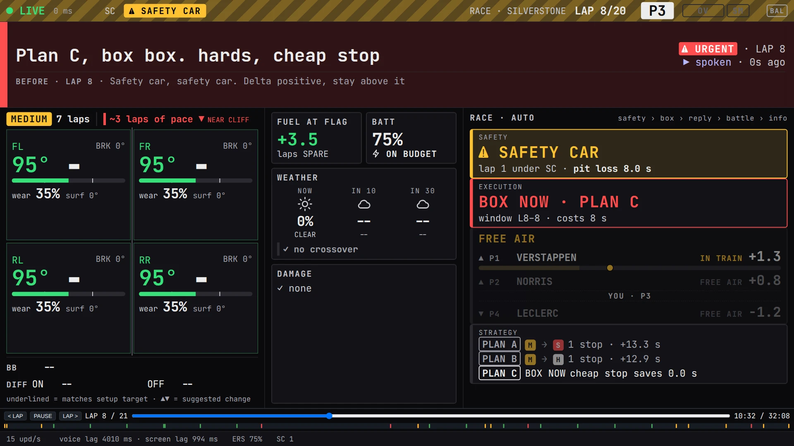

f1-pitwall
A race engineer for F1 26. It reads telemetry, decides what's worth saying, and says it over your headset.
f1-pitwall runs on the game PC, keeps a model of the session, and shows the same calls on a second-monitor dashboard and on your phone.
